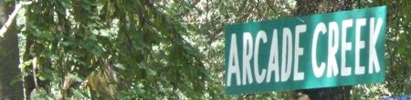

STUDIES OVERVIEW
The Arcade Creek is a complex ecosystem which has many different aspects which contribute to its overall health. In order to fully assess all of these aspects, 11 studies have been created to study each aspect of the creek's health.
The Bio Assay group tests the health of the creek's water with "indicator species." These species are highly sensitive to toxins and other malevolant changes in the creek's water. They are placed in creek water and then monitored for significant population changes.
Biological AssessmentBio Assessment monitors populations of microscopic macroinvertebrates in the creek bed. Large populations of certain species indicate good health of the creek.
BotanyThe Botany group monitors the populations of plant life near the creek. They determine if invasive plant species are present at the creek and disrupting its health.
ChemistryThe Chemistry group monitors the chemical content of the creek water. Measurements of dissolved oxygen, pH, temperature, and various metallic ions are taken. These data can then be used to determine if the water is chemically appropriate for most life at the creek.
HabitatThe Habitat group measures various physical features of the creek to provide a general description of its health. The group measures water depth, vegetation density, and average tree diameters.
Long MappingThe Long Mapping group maps the general shape and flow of the creek. They measure creek banks and soil build-up or erosion. The Long Mapping group provides a geographical reference for other studies to pinpoint locations at the creek.
OutreachThe Outreach group presents the tasks, results, and accomplishments of the Arcade Creek Project to various people, including schoolchildren, politicians, and environmentalists.
RestorationThe Restoration group uses data collected by the other studies to find areas of poor health of the creek. They then find the site and attempt to restore the health by removing garbage, toxins, and invasive species.
SedimentThe Sediment group monitors the composition of soil at the creek. The presence of an excess of rocks, clay, or silt indicates that the creek's soil is inappropriate for most life at the creek.
TechnologyThe Technology team is the study responsible for compiling creek data and publicizing the Arcade Creek Project through informational videos and this website.
VertebratesThe Vertebrate group monitors the populations of bird and other vertebrate species at the creek. Large populations of certain species indicate good health of the creek.